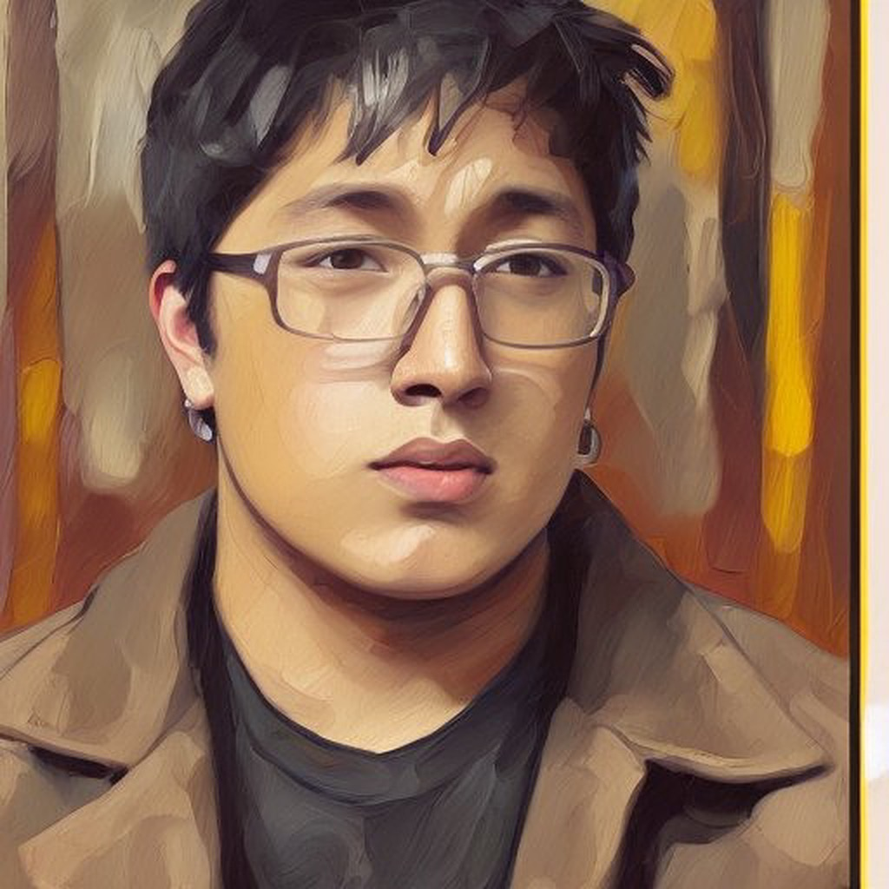

Zechariah Delos Santos

Summary:
Results-driven computer science student with a solid background in semiconductor
fabrication and histology processing seeking a challenging position
where I can leverage my technical expertise and analytical skills to contribute to the development and
optimization of
cutting-edge technologies.
Committed to applying my knowledge of computer science
principles, programming languages, and data analysis techniques to drive innovation,
improve efficiency, and solve complex problems in the semiconductor industry and
biomedical research field. Dedicated to continuous learning and
eager to collaborate with a
dynamic team to achieve organizational goals and drive technological advancements
Education:
Bergen Comunnity college
Associates of Science in Natural Sciences and Mathematics: Specializing in Computer Science 2021-2023
- Dean’s List Student for all semesters with a 4.0/4.0 GPA.
- Phi Theta Kappa National Honors Society Member
- STEM Club Member and Scouted for the 3SP Program (Stem Scholar Student)
Western Governors University
Bachelors of Science in Computer Science 2023-2024
Experience:
-
Coherent
February 2023 - Present
Semiconductor Fabrication and R&D
- Collaborate with process engineers to identify areas for improvement and implement process enhancements to increase manufacturing efficiency and yield
- Conduct experiments and perform data analysis to evaluate process performance and troubleshoot any issues related to fabrication.
- Ensure compliance with safety regulations and best practices in semiconductor manufacturing
- Design, develop, and optimize semiconductor fabrication processes to achieve desired device specifications, yield, and quality targets.
-
Bioreference Laboratories
August 2019 - October 2022
Histology Processing Team Lead/Specimen Processor
- Supervising and training team members in the proper processing and handling of histological
specimens.
- Coordinating with other departments and external partners to ensure timely and accurate delivery of
specimens.
- Ensuring that all laboratory procedures are performed according to established protocols and
regulations.
- Maintaining accurate records and documentation related to specimen processing and quality control
- Ensuring that equipment and supplies are properly maintained and calibrated.
-
Uber
June 2016 - June 2019
Driver
- Transporting passengers safely and efficiently to their destination including following the best route, avoiding
traffic, and ensuring the vehicle is in operating condition.
- Communicating effectively with passengers including providing clear instructions and providing a comfortable
and pleasant ride experience.
- Handling customer complaints and feedback this includes addressing any issues or concerns that passengers
may have and providing customer service
-
Best Buy
May 2015- June 2016
Samsung Galaxy Expert/Sales Consultant
- Provide exceptional customer service and technical support to customers who have questions and issues with
their devices.
- Recommend appropriate products,services, and accessories to customers based on their technological needs.
- Assisting customers with troubleshooting, repair, and maintenance of their technological devices.
Projects and Volunteer Work
-
PC Technician and Ipad Screen replacement
May,2014
- PC Assembly and maintenance, Component Selection, Overclocking,Cable Management, and BIOS/Firmware
updates
- Ipad/Macbook Assembly and Disassembly, Digitizer/LCD replacements
-
FreeCodeCamp.Org August 2019
- HTML Project for CatPhotoApp that exposes the developer to basic HTML tags.
- Cafe Menu Project: Exposure to CSS and HTML tags and functions to facilitate deployment of a menu for
future clients.
- JavaScript Algorithms and higher order functions.
Skills:
- Fluent in English and Tagalog (Filipino)
- Javascript
- Oracle SQL
- HTML and CSS
- C++ and Python
- Linux and Github
- Office365
- VMBox
Contact me